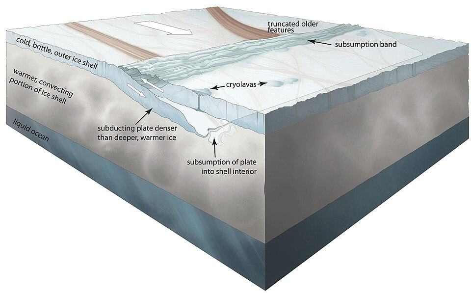
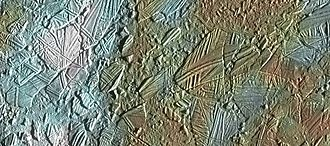
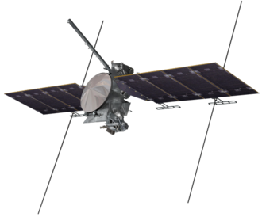

Europa
Europa is the smallest of the four Galilean moons and is slightly smaller than Earth's Moon.
It was discovered by Galileo Galilei in 1610 and is named after the mother of King Minos of Crete and lover of Zeus from Greek mythology.
It's icy surface is smooth, full of dark streaks and has hardly any craters.
It is speculated that Europa could have a subsurface ocean where extraterrestrial life could exist.
This is also the case on Ganymede and Callisto, but the ocean of Europa shapes the surface more actively than on the other two moons and the possibility of life there is more promising on theory due to number of factors.
A similar satellite is Saturn's moon Enceladus, which also has a smooth and icy surface, an active, tidally heated interior, and a direct contact between the rocky core and the liquid ocean.
The orbiter Europa Clipper by NASA that was launched in 2024 is planned to study the Europan surface.
The name Europa comes from the Greek mythological character of Phoenician origin.
The story tells that Zeus disguised as a bull in her father's herd, so he can abduct her.
When he rode with her all the way to Crete, he made Europa queen of the island.
The theme of naming the moons after Zeus's lovers was first suggested by Johannes Kepler and later adopted by Simon Marius.
The names weren't accepted initially until the discovery of the moons of Saturn.
Before that, the four Galilean moons were refered to as Jupiter I through IV in order from closest to furthest (Europa was Jupiter II).
In 1610 Galileo Galilei discovered four "stars" around Jupiter that he found to be moving.
He later concluded that the bodies were moving around Jupiter.
Around the same time, Simon Marius discovers the moons independently.
Orbit and rotation
Europa orbits Jupiter at an average distance of about 670,900 kilometers, completing one orbit every 3.5 Earth days.
Its orbit is nearly circular, yet the most eccentric of the Galilean moons at 0.009.
Europa is in a 1:2 orbital resonance with Io and a 2:1 resonance with Ganymede.
This resonance generates tidal forces that providing the heat and energy that shape its ever changing surface.
Like every rounded satellite, Europa is tidally locked to Jupiter.
Europa is the smallest of the Galilean moons of Jupiter with a diameter of 3,122 km and is the only one smaller than Earth's Moon.
It's mass is 4.8 × 10^22 kg, roughly 2/3 that of the Moon.
Studies and data from Galileo suggest that Europa is differentiated into several distinct layers.
At its core, Europa likely has a metallic center, possibly composed of iron and nickel, similar to Earth’s core but much smaller and insufficient to support its own magnetosphere.
Surrounding this core is a rocky mantle.
Above the mantle is a saltwater ocean hidden below an icy crust.
The interaction between the rocky interior and the overlying ocean may be a factor for potential life on Europa, as it could provide essential minerals and energy sources to the subsurface environment.
Data from the Galileo spacecraft and Hubble Space Telescope strongly suggest the presence of a global ocean beneath the ice of Europa, but it hasn't been directly observed.
The subsurface ocean is likely salty, with a chemistry that could support life, mainly organic materials (including tholins).
Magnesium and hydrogen sulfate are likely present in the ocean, as they, together with the tholins are the most likely substances to color the fractures on the surface reddish-brown.
Evidence for this ocean comes from magnetic field measurements, models of tidal heating, and surface features.
Magnetic field measurements from NASA’s Galileo spacecraft revealed that Europa interacts with Jupiter’s powerful magnetic field in a way that indicates the presence of a conductive layer, most likely a salty ocean beneath the ice.
Another reason why there might be such an ocean is the process of tidal heating, caused by Europa’s eccentric orbit and Jupiter, Io and Ganymede's gravity, that generates enough internal heat to keep water liquid under the icy shell.
This process possibly creates hydrothermal activity on the ocean floor.
Additionally, Europa’s young, geologically active surface, which is remarkably smooth and has barely any impact craters, suggests that the ice is constantly moving from the ocean below.
Europa has also shown to send water high into space.
Such water vapor plumes have also been exhibited by Enceladus, one of Saturn's moons.

Plate tectonics on Europa
Europa’s external structure is dominated by a smooth, icy surface that is among the youngest and most reflective in the solar system.
The surface is about 20 to 180 million years old and is crisscrossed by a network of linear features, called lineae, which are thought to result from the movement and fracturing of the ice shell due to tidal flexing.
The movement of ice is similar to plate tectonics on Earth.
The albedo of Europa is 0.64 - one of the highest in the Solar System.
The lineae make up most of the darker areas of Europa.
Their reddish color is likely due to the salts and tholins that are brought from inside the ocean.

Enhanced color image of Conamara Chaos, an example of chaotic terrain on Europa
Unlike many other moons, Europa has very few impact craters, indicating that its surface is geologically active and frequently renewed.
An example of a crater is Pwyll, which is easily distinguishable by its rays of ejecta, suggesting it is a recent feature.
Other features include chaotic terrain features like Conamara Chaos.
It has been suggested that so-called "penitentes", or ice spikes exist around the equatorial regions of Europa due to direct sunlight that sublimes the ice.
They haven't been proven by direct observation yet, but could make it challenging for future landing missions.
There is a tenuous athmosphere on the Europan surface, mainly consisting of oxygen and some water vapors.
The surface radiation levels on Europa are equivalent to 5400 mSv/day.
The first mission to make flybys of Europa were Pioneer 10 and 11, taking the first photos of the satellite, albeit low-resolution.
NASA’s Voyager missions in the late 1970s - Voyager 1 and Voyager 2 - provided the first close-up images of Europa, revealing a surface unlike any other in the solar system — smooth, icy, and crossed by mysterious dark lines.
These images sparked scientific interest, speculations about a hidden ocean, and led to further investigation.
The most significant mission to study Europa was NASA’s Galileo spacecraft, which orbited Jupiter from 1995 to 2003.
Galileo conducted multiple flybys of Europa, collecting detailed images and data that confirmed the presence of a subsurface ocean beneath the moon’s icy crust, by detecting disturbances in Jupiter’s magnetic field, likely due to a conductive saltwater layer.
Galileo also revealed the moon’s complex surface features, including cracks and chaotic terrain, providing strong evidence for geological activity.
More recently, NASA’s Cassini, New Horizons, and Juno spacecraft have made distant observations on Europa.

Europa Clipper, a NASA spacecraft
The most anticipated upcoming mission is NASA’s Europa Clipper, which launched in October 2024 and is expected to arrive at Jupiter in 2030.
The mission is dedicated to the icy satellite and will conduct nearly 50 fast and close flybys of Europa to avoid the strong, radioactive magnetosphere of Jupiter.
It is equipped with advanced instruments to study the moon’s ice shell, subsurface ocean, composition, and geology.
The mission aims to determine the thickness of the ice, the depth and salinity of the ocean, and the potential habitability of Europa’s hidden environment.
In addition to Europa Clipper, the ESA has launched the Jupiter Icy Moons Explorer (JUICE) mission in April the previous year and is expected to reach Jupiter in 2031.
While JUICE’s primary targets is Ganymede, it will also perform flybys of Europa and Callisto, focusing on studying the moon’s surface, subsurface, and potential for habitability.
Europa is considered one of the most promising candidates for extraterrestrial habitability within our Solar System, primarily due to the presence of its subsurface ocean and geologic activity.
This global ocean, believed to be in contact with the rocky mantle, could provide the essential ingredients for life as we know it.
Liquid water, a source of energy, salts and organic compounds are all theoretically present on Europa.
Tidal heating, generated by Jupiter and the other moons' gravitational pull, keeps the ocean liquid and may also drive hydrothermal activity on the ocean floor, supplying nutrients and energy similar to Earth’s deep-sea vents.
External links
{% include catnatural-satellites.html %}